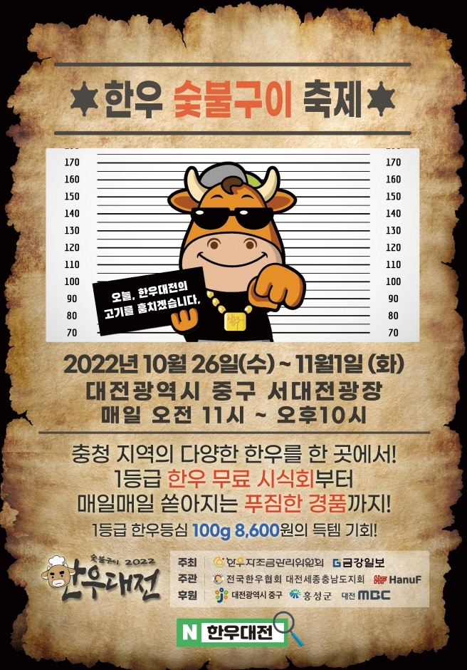
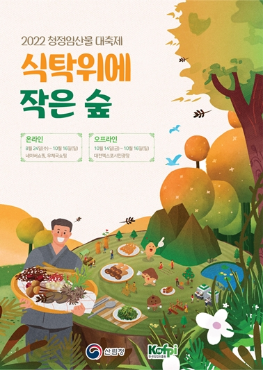
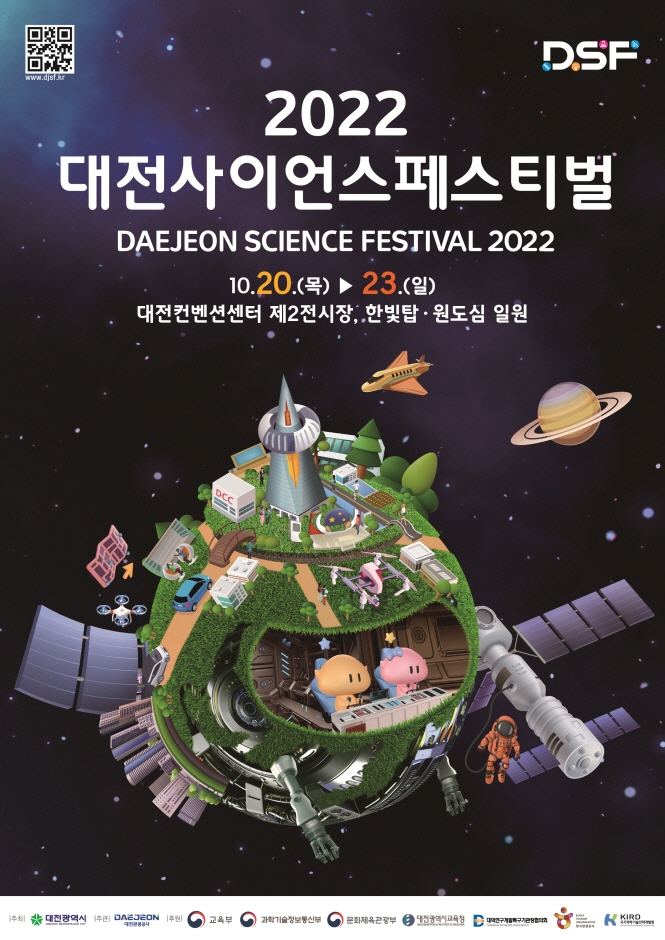

대전 축제 해~유
Festival

한우 숯불구이 축제
소개
'일두백미', 100가지 맛이 존재하는 한우고기 우리 조상들은
한우 한 마리에서 100가지 맛이 나온다고 하여 한우를
'일두백미'라 하였다.
'비싼가격, 소비위축'으로 인한 충청지역 축산농가의 어려움
해소 한우는 뛰어난 맛과 좋은 효능에도 다른 고기에 비해 비싼
가격으로 인하여 한우 소비를 망설이는 소비자와, 한우 소비가
줄어 힘든 충청지역 축산농가가 모두 만족할 수 있는 한우
소비방안에 대한 고민을 하였고, 한우의 차별된 우수성을
인지하고 부위별 특성, 용도를 고려하여 보다 다양하고 건강한
한우의 맛을 즐기기 위해 2022 한우대전 한우숯불구이 축제가
탄생하였습니다.

테미 올래! 축제
소개
레트로와 할로윈의 콜라보 축제! 테미올래축제가 10월 29일
토요일에 개최됩니다.
역사와 문화가 살아 숨쉬는 테미오래에서 할로윈 기간을 맞이해
가족들과 연인이 특별한 추억을 만들 수 있는 이색적인 축제를
준비했습니다.
남녀노소 즐기실 수 있는 다양한 프로그램과 최신트렌드를
반영한 볼거리, 먹거리, 즐길거리가 많은 축제이니 가을 마지막
주 토요일 오셔서 즐겨주시길 바랍니다.

청정 임산물 대축제
소개
청정 임산물을 국민들에게 다양한 형태로 알리기 위해, 제철
임산물을 간편하게 만날 수 있는 온&오프라인이 결합된
하이브리드형 축제로 개최되는 행사입니다.
온라인 축제에서는 판매 기획전 및 라이브 커머스 등이 진행되고
오프라인 축제에서는 개막식, 쿠킹클래스, K-FOREST FOOD
토크쇼, 버스킹 등 임산물을 활용한 다양한 프로그램이 구성되어
있습니다.

대전 효 문화 뿌리축제
소개
대전 효 문화 뿌리 축제는 천혜 자연환경 속에 위치한 뿌리공원,
한국 족보 박물관, 효 문화마을, 효문화진흥원을 아우르는 효
문화 인프라를 기반으로 효의 가치와 의미를 경험하며 자신의
뿌리를 찾아보고 가족의 정을 느낄수 있는 축제입니다.
전국에 어르신과 청소년, 그리고 3대가 모두 함께 어우러질 수
있는 축제의 장이 되어 전국에 효 실천 문화 확산 계기를
마련하고자 한다.

한빛 야시장 가을 주간 감성
소개
하늘도 높고 바람도 상쾌한 9월 가을밤을 온전히 느낄 수 있는
한빛 야시장이 한빛탑 물빛광장에서 펼쳐집니다.
다양한 먹거리가 있는 푸드트럭과 시원한 맥주, 야외에서 재즈
공연과 함께 즐기는 와인까지, 시원한 바람과 함께 감성 힐링을
엑스포 한빛탑에서 즐겨보세요.
<한빛 야시장 : 가을 주(酒)간 감성>으로 여러분을 초대합니다.

대전 사이언스 페스티벌
소개
2022 대전 사이언스 페스티벌은 '과학과 문화의 융합! 미래를
엿보다'라는 주제로 2022년 개장한 대전 제2컨벤션센터, 엑스포
과학공원, 대덕특구, 원도심 일원 등 다양한 장소에서 즐길 수
있는 대규모 과학 축제 입니다.
올해 25회째를 맞이하여, AI 체험, 코딩 체험, 메타버스,
기초과학 체험 등을 체험할 수 있으며, 야간경관도 함께 즐길 수
있는 체류형 과학 체험도 제공합니다.
대전을 넘어 글로벌 인구가 즐길 수 있는 글로벌 사이언스 투어,
대전시민 천문대와 함께하는 별 축제, 과학 콘서트 등
부대행사들도 관람객들의 재미를 더해줄 예정입니다.

대전 서구 힐링 아트 페스티벌
소개
도심 속에서 펼쳐지는 빛과 문화 예술의 향연 2022 대전 서구
힐링 아트 페스티벌이 10월 14일부터 16일까지 3일간
개최됩니다.
올해로 6회째를 맞는 대전 서구 힐링 아트 페스티벌은 "세계
속의 대전 서구, 희망을 밝히다"라는 주제로, 최신 트렌드를
반영하고 다양한 문화예술 프로그램으로 구성한 문화 예술
축제입니다.

우암 야행
소개
2022 우암 야행이 오는 10월 13일부터 10월 14일까지 대전광역시
동구 우암사적공원 일대에서 열립니다.
2022 우암 야행은 ICT 융합 이머시브극, 토크 콘서트, 전통 공연
등 다양한 프로그램으로 즐거움을 더했습니다.
ICT 융합 이머시브극은 이벤터스 사이트를 통한 사전 예약으로
진행되며 참가비를 지불하고 사전 신청을 하면 헤드셋을
대여해주고 머그컵과 전통차를 제공합니다.
지역 공예 예술가들과 함께하는 플리마켓, 청년 푸드 트럭 협동
조합과 연계한 푸드트럭으로 구성되는 야시장도 운영됩니다.
우암사적공원 일대에는 다양한 포토존과 청사초롱길이
조성됩니다.